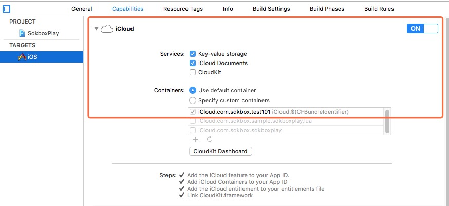
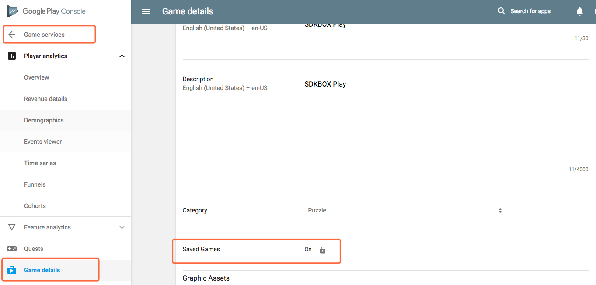

<!DOCTYPE html>
<html lang="en">
    <head>
        <meta charset="utf-8">
        <meta http-equiv="X-UA-Compatible" content="IE=edge">
        <meta name="viewport" content="width=device-width, initial-scale=1.0">
        
        
        
        <link rel="shortcut icon" href="../../../img/favicon.ico">

	<title>Play with C++ - SDKBOX</title>
        
        <link href="../../../css/bootstrap-custom.min.css" rel="stylesheet">
        <link href="../../../css/font-awesome-4.0.3.css" rel="stylesheet">
        <link href="../../../css/base.css?2" rel="stylesheet">
        <link rel="stylesheet" href="../../../css/highlight.css">
        <link href="../../../css/custom.css" rel="stylesheet">
        

        <!-- HTML5 shim and Respond.js IE8 support of HTML5 elements and media queries -->
        <!--[if lt IE 9]>
            <script src="https://oss.maxcdn.com/libs/html5shiv/3.7.0/html5shiv.js"></script>
            <script src="https://oss.maxcdn.com/libs/respond.js/1.3.0/respond.min.js"></script>
        <![endif]-->

    </head>

    <body>

        <div class="navbar navbar-default navbar-fixed-top" role="navigation">
    <div class="container">

        <!-- Collapsed navigation -->
        <div class="navbar-header">
            
            <!-- Expander button -->
            <button type="button" class="navbar-toggle" data-toggle="collapse" data-target=".navbar-collapse">
                <span class="sr-only">Toggle navigation</span>
                <span class="icon-bar"></span>
                <span class="icon-bar"></span>
                <span class="icon-bar"></span>
            </button>
            

            <!-- Main title -->
            <a class="navbar-brand" href="http://sdkbox.com">Docs</a>
        </div>

        <!-- Expanded navigation -->
        <div class="navbar-collapse collapse">

            <ul class="nav navbar-nav navbar-right">


            
                <!-- Main navigation -->
                <ul class="nav navbar-nav">
                
                
                    <li >
                        <a href="../../..">Overview</a>
                    </li>
                
                
                
                    <li class="dropdown active">
                        <a href="#" class="dropdown-toggle" data-toggle="dropdown">Cocos2d-x <b class="caret"></b></a>
                        <ul class="dropdown-menu">
                        
                            
<li >
    <a href="../../../cocos/">Overview</a>
</li>

                        
                            
<li >
    <a href="../../../installer/">CLI Installer</a>
</li>

                        
                            
<li >
    <a href="../../../qa/cocos_creator/">For Cocos Creator</a>
</li>

                        
                            
  
  <li class="dropdown-submenu">
    <a tabindex="-1" class="non-link">Plugins</a>
    <ul class="dropdown-menu">
        
            
<li >
    <a href="../../achievement/">Achievements</a>
</li>

        
            
  

        
            
<li >
    <a href="../../adcolony/">AdColony</a>
</li>

        
            
  

        
            
<li >
    <a href="../../admob/">AdMob</a>
</li>

        
            
  

        
            
<li >
    <a href="../../agecheq/">AgeCheq</a>
</li>

        
            
  

        
            
<li >
    <a href="../../appnext/">Appnext</a>
</li>

        
            
  

        
            
<li >
    <a href="../../appodeal/">Appodeal</a>
</li>

        
            
  

        
            
<li >
    <a href="../../amazon/">Amazon</a>
</li>

        
            
  

        
            
<li >
    <a href="../../apteligent/">Apteligent</a>
</li>

        
            
  

        
            
<li >
    <a href="../../bee7/">Bee7</a>
</li>

        
            
  

        
            
<li >
    <a href="../../chartboost/">Chartboost</a>
</li>

        
            
  

        
            
<li >
    <a href="../../ethwallet/">EthWallet</a>
</li>

        
            
<li >
    <a href="../../facebook/">Facebook</a>
</li>

        
            
  

        
            
<li >
    <a href="../../gameroom/">Facebook Gameroom</a>
</li>

        
            
  

        
            
<li >
    <a href="../../firebase/">Firebase</a>
</li>

        
            
  

        
            
<li >
    <a href="../../flurryanalytics/">Flurry Analytics</a>
</li>

        
            
  

        
            
<li >
    <a href="../../fyber/">Fyber</a>
</li>

        
            
  

        
            
<li >
    <a href="../../googleanalytics/">Google Analytics</a>
</li>

        
            
  

        
            
<li >
    <a href="../../googleplay/">Google Play Games</a>
</li>

        
            
  

        
            
<li >
    <a href="../../iap/">In-App Purchase</a>
</li>

        
            
  

        
            
<li >
    <a href="../../inmobi/">InMobi</a>
</li>

        
            
  

        
            
<li >
    <a href="../../kochava/">Kochava</a>
</li>

        
            
  

        
            
<li >
    <a href="../../leadbolt/">LeadBolt</a>
</li>

        
            
  

        
            
<li >
    <a href="../../leaderboard/">Leaderboard</a>
</li>

        
            
  

        
            
<li >
    <a href="../../misc/">Misc</a>
</li>

        
            
  

        
            
<li >
    <a href="../../onesignal/">OneSignal</a>
</li>

        
            
  

        
            
<li >
    <a href="../../playphone/">Playphone</a>
</li>

        
            
  

        
            
<li >
    <a href="../../phunwareads/">Phunware Ads</a>
</li>

        
            
  

        
            
<li >
    <a href="../../phunwaremessaging/">Phunware Messaging</a>
</li>

        
            
  

        
            
<li >
    <a href="../../review/">Ratings & Reviews</a>
</li>

        
            
  

        
            
<li >
    <a href="../../sdkboxads/">SDKBOX Ads</a>
</li>

        
            
  

        
            
<li >
    <a href="../">SDKBOX Play</a>
</li>

        
            
  

        
            
<li >
    <a href="../../share/">Social Sharing</a>
</li>

        
            
  

        
            
<li >
    <a href="../../tapcore/">Tapcore</a>
</li>

        
            
  

        
            
<li >
    <a href="../../tune/">Tune</a>
</li>

        
            
  

        
            
<li >
    <a href="../../unityads/">UnityAds</a>
</li>

        
            
  

        
            
<li >
    <a href="../../valuepotion/">Valuepotion</a>
</li>

        
            
  

        
            
<li >
    <a href="../../vungle/">Vungle</a>
</li>

        
            
  

        
            
<li >
    <a href="../../youtube/">Youtube</a>
</li>

        
            
  

        
    </ul>
  </li>
  

                        
                        </ul>
                    </li>
                
                
                
                    <li class="dropdown">
                        <a href="#" class="dropdown-toggle" data-toggle="dropdown">Unity <b class="caret"></b></a>
                        <ul class="dropdown-menu">
                        
                            
<li >
    <a href="../../../unity/allinone/">SDKBOX AllInOne</a>
</li>

                        
                            
<li >
    <a href="../../../unity/iap/">In-App Purchase</a>
</li>

                        
                            
<li >
    <a href="../../../unity/review/">Ratings & Reviews</a>
</li>

                        
                            
<li >
    <a href="../../../unity/socialshare/">SocialShare</a>
</li>

                        
                            
<li >
    <a href="../../../unity/googleanalytics/">Google Analytics</a>
</li>

                        
                            
<li >
    <a href="../../../unity/sdkboxplay/">SDKBOX Play</a>
</li>

                        
                            
<li >
    <a href="../../../unity/addeals/">AdDeals</a>
</li>

                        
                        </ul>
                    </li>
                
                
                
                    <li class="dropdown">
                        <a href="#" class="dropdown-toggle" data-toggle="dropdown">Unreal <b class="caret"></b></a>
                        <ul class="dropdown-menu">
                        
                            
<li >
    <a href="../../../unreal/iap/">In-App Purchase</a>
</li>

                        
                            
<li >
    <a href="../../../unreal/chartboost/">Chartboost</a>
</li>

                        
                        </ul>
                    </li>
                
                
                
                    <li class="dropdown">
                        <a href="#" class="dropdown-toggle" data-toggle="dropdown">LiveOps <b class="caret"></b></a>
                        <ul class="dropdown-menu">
                        
                            
<li >
    <a href="../../../liveops/">Setup</a>
</li>

                        
                            
<li >
    <a href="../../../liveops/remote-config/">Remote Configuration</a>
</li>

                        
                            
<li >
    <a href="../../../liveops/receipt-verification/">Server-side IAP receipt verification</a>
</li>

                        
                            
<li >
    <a href="../../../liveops/catalog-management/">On-the-fly catalog management</a>
</li>

                        
                        </ul>
                    </li>
                
                
                
                    <li class="dropdown">
                        <a href="#" class="dropdown-toggle" data-toggle="dropdown">Tutorials <b class="caret"></b></a>
                        <ul class="dropdown-menu">
                        
                            
<li >
    <a href="../../../qa/from-google-to-amazon/">From Google to Amazon</a>
</li>

                        
                            
<li >
    <a href="../../../qa/integration-admob-to-creator/">Admob in Creator</a>
</li>

                        
                            
<li >
    <a href="../../../qa/integration-fyber-to-cocos/">Fyber with Cocos2d-x</a>
</li>

                        
                            
<li >
    <a href="../../../qa/fb-share-on-cocos/">Facebook with Cocos2d-x</a>
</li>

                        
                            
<li >
    <a href="../../../qa/android_64k/">Fix Android 64K methods limit</a>
</li>

                        
                            
<li >
    <a href="../../../qa/integration-iap-on-unity/">IAP with Unity</a>
</li>

                        
                            
<li >
    <a href="../../../qa/use-gui-integration-ga-to-creator/">GA with SDKBox GUI in Creator</a>
</li>

                        
                            
<li >
    <a href="../../../qa/use-custom-activity-on-unity/">Unity Custom Activity</a>
</li>

                        
                            
<li >
    <a href="../../../qa/crypt-sdkbox-config/">Encrypt Decrypt sdkbox_config.json</a>
</li>

                        
                            
<li >
    <a href="../../../qa/sdkboxplay_troubleshoot/">SDKBoxPlay Troubleshoot</a>
</li>

                        
                            
<li >
    <a href="../../../qa/iap_troubleshoot/">IAP Troubleshoot</a>
</li>

                        
                            
<li >
    <a href="../../../qa/sdkbox-cmake/">CMake</a>
</li>

                        
                        </ul>
                    </li>
                
                
                
                    <li >
                        <a href="../../../release-note/">About</a>
                    </li>
                
                

                <li style="margin-left:30px">
                    <a href="http://sdkbox-doc.github.io/zh/">中文</a>
                </li>
                
                </ul>
            


            </ul>
        </div>
    </div>
</div>

        <div class="container">
            
                <div class="col-md-3"><div class="bs-sidebar hidden-print affix well" role="complementary">
    <ul class="nav bs-sidenav">
    
        <li class="main active"><a href="#faq">FAQ</a></li>
	
    
        <li class="main "><a href="#prerequisites">Prerequisites</a></li>
	
	<ul class="sub-sidenav">
        
            <li><a href="#google-play">Google play</a></li>
        
            <li><a href="#google-play-check-list">Google Play check list</a></li>
        
            <li><a href="#game-center">Game Center</a></li>
        
            <li><a href="#cloud-save">Cloud Save</a></li>
        
	</ul>
	
    
        <li class="main "><a href="#integration">Integration</a></li>
	
	<ul class="sub-sidenav">
        
            <li><a href="#json-configuration">JSON Configuration</a></li>
        
	</ul>
	
    
        <li class="main "><a href="#usage">Usage</a></li>
	
	<ul class="sub-sidenav">
        
            <li><a href="#initialize-sdkboxplay">Initialize SdkboxPlay</a></li>
        
            <li><a href="#using-sdkboxplay">Using SdkboxPlay</a></li>
        
            <li><a href="#sdkboxplay-events">SdkboxPlay events</a></li>
        
	</ul>
	
    
        <li class="main "><a href="#api-reference">API Reference</a></li>
	
	<ul class="sub-sidenav">
        
            <li><a href="#methods">Methods</a></li>
        
            <li><a href="#listeners">Listeners</a></li>
        
	</ul>
	
    
        <li class="main "><a href="#manual-integration">Manual Integration</a></li>
	
    
        <li class="main "><a href="#manual-integration-for-ios">Manual Integration For iOS</a></li>
	
    
        <li class="main "><a href="#manual-integration-for-android">Manual Integration For Android</a></li>
	
	<ul class="sub-sidenav">
        
            <li><a href="#copy-files">Copy Files</a></li>
        
            <li><a href="#edit-androidmanifestxml">Edit AndroidManifest.xml</a></li>
        
            <li><a href="#edit-androidmk">Edit Android.mk</a></li>
        
            <li><a href="#edit-applicationmk">Edit Application.mk</a></li>
        
            <li><a href="#modify-appactivityjava">Modify AppActivity.java</a></li>
        
	</ul>
	
    
        <li class="main "><a href="#manual-integration-for-google-play-services-sdk-dependent-library-only">Manual Integration for Google Play Services SDK (dependent library only)</a></li>
	
	<ul class="sub-sidenav">
        
            <li><a href="#suggestion">Suggestion</a></li>
        
            <li><a href="#modify-projectproperties">Modify project.properties</a></li>
        
            <li><a href="#integration-manually">Integration manually</a></li>
        
	</ul>
	
    
        <li class="main "><a href="#proguard-optional">Proguard (optional)</a></li>
	
    
        <li class="main "><a href="#qa">Q&amp;A</a></li>
	
	<ul class="sub-sidenav">
        
            <li><a href="#how-to-submit-float-score">How To Submit Float Score</a></li>
        
	</ul>
	
    
        <li class="main "><a href="#cloud-save_1">Cloud Save</a></li>
	
	<ul class="sub-sidenav">
        
            <li><a href="#ios-cloud-save">iOS Cloud Save</a></li>
        
            <li><a href="#usage_2">Usage</a></li>
        
	</ul>
	
    
        <li class="main "><a href="#thrid-server-authenticate">Thrid Server Authenticate</a></li>
	
	<ul class="sub-sidenav">
        
            <li><a href="#ios">iOS</a></li>
        
            <li><a href="#android">Android</a></li>
        
	</ul>
	
    
        <li class="main "><a href="#crash">Crash</a></li>
	
    
    </ul>
</div></div>
                <div class="col-md-9" role="main">

<p><a href="../">&#8249; SdkboxAds Doc Home</a></p>
<h1>SdkboxPlay Integration Guide</h1>

<h4><em><b>For the C++ version of cocos2d-x v3.x</b> - (<a href="./../">all other versions</a>)</em></h4>

<h2 id="faq">FAQ</h2>
<ol>
<li>
<p><code>submitScore</code>: java.lang.IllegalStateException: Score tags must be no more than 64 URI safe characters. Input was <strong>*</strong>.</p>
<p><a href="https://stackoverflow.com/questions/695438/safe-characters-for-friendly-url">The characters generally considered unsafe are</a>:</p>
<ul>
<li>space (" ")</li>
<li>less than and greater than ("&lt;&gt;")</li>
<li>open and close brackets ("[]")</li>
<li>open and close braces ("{}")</li>
<li>pipe ("|")</li>
<li>backslash ("\")</li>
<li>caret ("^")</li>
<li>percent ("%")</li>
</ul>
</li>
</ol>
<h2 id="prerequisites">Prerequisites</h2>
<h3 id="google-play">Google play</h3>
<ul>
<li>
<p>Follow <a href="https://developers.google.com/games/services/console/enabling#step_2_add_your_game_to_the_dev_console">this instructions</a> to enable game services for your game and create a linked application. Otherwise, the app won't be able to make connections to google play. It's recommended to follow the instruction rigorously to avoid any issues.</p>
</li>
<li>
<p>Use developer console to configure leaderboards and achievements.</p>
</li>
<li>
<p>Find your app id and you'll need to replace replace it in the <code>AndroidManifest.xml</code> later
   </p>
</li>
</ul>
<h3 id="google-play-check-list">Google Play check list</h3>
<ol>
<li>Application id (string.xml)</li>
<li>App Release mode</li>
<li><code>cloud_save</code> is optional, enalbe and fill <code>true</code> if you will use Saved Game else fill <code>false</code></li>
<li>Publish to Alpha/Bete test</li>
<li>Add your test account to tester list</li>
<li><a href="http://docs.sdkbox.com/en/qa/sdkboxplay_troubleshoot/#keystore">SHA-1 keys</a></li>
<li><code>web_client_id</code> is optional, fill it when you need google signin authcode else remove it</li>
<li>More <a href="../../../qa/sdkboxplay_troubleshoot/">Troubleshoot</a></li>
</ol>
<h3 id="game-center">Game Center</h3>
<ul>
<li>Enable Game Center on XCode.</li>
<li>Use itunes connect to configure <a href="https://developer.apple.com/library/content/documentation/LanguagesUtilities/Conceptual/iTunesConnectGameCenter_Guide/Leaderboards/Leaderboards.html#//apple_ref/doc/uid/TP40013726-CH2-SW47">leaderboards</a> and <a href="https://developer.apple.com/library/content/documentation/LanguagesUtilities/Conceptual/iTunesConnectGameCenter_Guide/Achievements/Achievements.html#//apple_ref/doc/uid/TP40013726-CH3-SW3">achievements</a>.</li>
<li>Make sure Leaderboard and Achievements are live before testing</li>
</ul>
<h3 id="cloud-save">Cloud Save</h3>
<ul>
<li>Enable iCloud on Xcode. </li>
<li>Enable <code>Saved Games</code> on <a href="https://play.google.com/apps/publish/signup/">Google Play Console</a> </li>
</ul>
<p><strong>NOTE</strong>: In 2.3.14 cloud save is enable as default, it cause user can't sign-in on android if you do not enable <code>Save Games</code> on Google Play Console.</p>
<h2 id="integration">Integration</h2>
<p>Open a terminal and use the following command to install the SDKBOX SdkboxPlay plugin. Make sure you setup the SDKBOX installer correctly.</p>
<pre><code class="bash">$ sdkbox import sdkboxplay
</code></pre>

<!--## Configuration

## Remote Configuration

Optionally, you can choose to use SDKBOX LiveOps to remotely update this plugin's configuration. [Learn more](/liveops/remote-config)-->

<h3 id="json-configuration">JSON Configuration</h3>
<h4 id="replace-app-id">Replace App ID</h4>
<p>You should replace your app_id in <code>AndroidManifest.xml</code></p>
<ol>
<li>replace following line</li>
</ol>
<pre><code>&lt;meta-data android:name=&quot;com.google.android.gms.games.APP_ID&quot; android:value=&quot;_your_app_id_&quot; /&gt;
</code></pre>

<p>with</p>
<pre><code>&lt;meta-data android:name=&quot;com.google.android.gms.games.APP_ID&quot; android:value=&quot;@string/app_id&quot; /&gt;
</code></pre>

<ol>
<li>add following line to <code>&lt;Your Project&gt;\proj.android\res\values\strings.xml</code></li>
</ol>
<pre><code>&lt;string name=&quot;app_id&quot;&gt;_your_app_id_&lt;/string&gt;
</code></pre>

<h4 id="update-sdkbox_configjson">Update sdkbox_config.json</h4>
<p>SDKBOX Installer will automatically create a sample configuration <code>sdkbox_config.json</code> for you</p>
<p>Here is an example of the SdkboxAds configuration:</p>
<pre><code class="json">    &quot;sdkboxplay&quot; : {
      &quot;leaderboards&quot; : [
        {
          &quot;id&quot; : &quot;CgkI0sux8sMWEAIQAA&quot;,
          &quot;name&quot; : &quot;ldb1&quot;
        }
      ],
      &quot;achievements&quot; : [
        {
          &quot;id&quot; : &quot;CgkI0sux8sMWEAIQAg&quot;,
          &quot;name&quot; : &quot;ten-games&quot;,
          &quot;incremental&quot; : false
        },
        {
          &quot;id&quot; : &quot;CgkI0sux8sMWEAIQAw&quot;,
          &quot;name&quot; : &quot;hunter&quot;,
          &quot;incremental&quot; : false
        },
        ...
      ],
      &quot;debug&quot; : true,
      &quot;show_achievement_notification&quot;: true,
      &quot;connect_on_start&quot; : false
    }

</code></pre>

<p>As it can be seen, leaderboards and achievements have a human readable name, and a machine generated id. This is on purpose so that the same API can be used between platforms. While Google play generated random ids like the ones shown, iOS Game Center will be more human friendly.
In either case, the developer will reference leaderboards and achievements by a name of his choice, like in the example shown.</p>
<p>if you don't want popup show when unlock achievement, you can set 'show_achievement_notification' false.</p>
<!---->

<h2 id="usage">Usage</h2>
<h3 id="initialize-sdkboxplay">Initialize SdkboxPlay</h3>
<p>Initialize the plugin where appropriate in your code. We recommend to do this in the <code>AppDelegate::applicationDidFinishLaunching()</code> or <code>AppController:didFinishLaunchingWithOptions()</code>. Make sure to include the appropriate headers:</p>
<pre><code class="cpp">#include &quot;PluginSdkboxPlay/PluginSdkboxPlay.h&quot;
AppDelegate::applicationDidFinishLaunching()
{
     sdkbox::PluginSdkboxPlay::init();
}
</code></pre>

<h3 id="using-sdkboxplay">Using SdkboxPlay</h3>
<h4 id="intro">Intro</h4>
<p>SdkboxPlay is an abstraction for Google Play and Game Center's social services. Under a common API exposes access to Leaderboards and Achievements for each platform.
In order to keep the API fit to the two models, some tradeoffs have been made, which will be detailed in each section</p>
<h5 id="logged-in-user-info">Logged in user info</h5>
<p>Calling the method <code>sdkbox::SdkboxPlay::getPlayerId()</code> to get an id per platform that uniquely identifies the logged-in user.
Additionally, you can query more information about the user.</p>
<h6 id="iosandroid-fields">iOS/Android fields</h6>
<p>These fields are common to ios and android:
<em> player_id
</em> name
* display_name</p>
<p>making a call to <code>sdkbox::SdkboxPlay::getPlayerAccountField( const std::string&amp; field )</code> will return a string with the field
contents.
If the requested field does not exist, empty string will returned in exchange.
<code>player_id</code> will be returned by calling <code>sdkbox::SdkboxPlay::getPlayerId()</code> too.</p>
<h6 id="android-only-fields">Android only fields</h6>
<p>For Android platform, there are some other available fields:</p>
<ul>
<li>title</li>
<li>icon_image_uri</li>
<li>hires_image_uri</li>
<li>last_play_timestamp</li>
<li>retrieved_timestamp</li>
<li>server_auth_code</li>
</ul>
<p>use the same <code>getPlayerAccountField</code> to get these values as strings.</p>
<h5 id="achievements">Achievements</h5>
<p>Achievements are defined on the respective platform's developer console.
There are differences in concept between GooglePlay and GameCenter's achievements:
+ Google Play differentiates between achievements, and incremental achievements. Google keeps track of incremental achievements progress. Achievements are achieved only once.
+ For Game Center, all achievements are incremental, but Game center does not keep track of its progress. Achievements are expected to be achieved during a game session. Achievements can be set to be unlocked several times.
+ Google Play has the notion of newly unlocked achievement (first time unlocked), and Game Center has the notion of recurrently unlockable achievement. Both concepts are complementary.</p>
<p>To keep things consisten, SdkboxPlay API:</p>
<ul>
<li>Allows you to define non-incremental achievements. For ios, are submitted with an incremental value of 100, which means it will be unlocked.</li>
<li>Allows you to define Incremental achievements. In Google play, incremental achievements have defined their unlocking value on the application console.</li>
<li>For consistency, it is recommended to define Google Play's achievements with a count of 100. This is the value Game Center expects to be reached to unlock an achievement.</li>
</ul>
<h5 id="leaderboards">Leaderboards</h5>
<p>Leaderboards are defined on the respective platform's developer console.
To keep things simple, the current SdkboxPlay implementation does not allow to define group leaderboards from iOS. For both platforms, an arbitrary number of leaderboards can be defined.
Though both, GooglePlay and GameCenter define leaderboards in the same way, in the runtime there are some differences:</p>
<ul>
<li>Google Play creates automatically 3 time frames for each leaderboard: daily, weekly and all time best scores.</li>
<li>Game Center creates just one timeframe.</li>
</ul>
<p>This will be resembled on the observer methods for leaderboard operations as described below.</p>
<h4 id="usage_1">Usage</h4>
<p>A call to <code>sdkbox::SdkboxPlay::init()</code> will configure the plugin with the selected leaderboards and achievements present in the sdkbox_config.json file.</p>
<p>First, a connection to the games services must be done by calling:</p>
<pre><code class="cpp">sdkbox::PluginSdkboxPlay::signin();
</code></pre>

<p>If connection is successful, you'll be able to use the SdkboxPlay services with the following API:</p>
<h5 id="leaderboards_1">Leaderboards</h5>
<pre><code class="cpp">void submitScore(   const std::string&amp; leaderboard_name, long score )
</code></pre>

<p>This method submits a update request to the given leaderboard. The leaderboard name must match any of the leaderboard names defined in the configuration block.
If a request is sent to a non existent leaderboard, nothing will happen.
Whether to store the new score or not, can be defined in the developer's console (store always latest score, only maximum, etc.)
This method will invoke plugin's observer method:</p>
<pre><code class="cpp">void onScoreSubmitted(
        const std::string&amp; leaderboard_name,
        long score,
        bool maxScoreAllTime,
        bool maxScoreWeek,
        bool maxScoreToday )
</code></pre>

<p>For iOS, this method will have the three boolean flags as false.</p>
<pre><code class="cpp">void showLeaderboard( const std::string&amp; leaderboard_name );
</code></pre>

<p>Request to show the leaderboard information. This will invoke a platform specific UI.
For iOS, there's no different UI for requesting leaderboards and achievements, so this method will invoke the UI with the leaderboards view enabled.</p>
<h5 id="achievements_1">Achievements</h5>
<pre><code class="cpp">void unlockAchievement( const std::string&amp; achievement_name );
</code></pre>

<p>Unlock a non incremental achievement. In the case of iOS, it will send a request to Game Center of unlock with 100 progress points.
If the achievement type is incorrectly defined in the configuration file (wrong id), or the play services determines it is of the wrong type (Google play) the method will fail silently.
Upon successful call, this method will invoke the listener's method: onAchievementUnlocked( const std::string&amp; achievement_name, bool newlyUnlocked ).</p>
<pre><code class="cpp">void incrementAchievement(
    const std::string&amp; achievement_name,
    int increment );
</code></pre>

<p>Increment an incremental achievement.
The method will silently fail if the achievement type is incorrectly defined in the configuration file (wrong or non existent id), or the play services determines it is of the wrong type (Google Play).
If the call is successful, this method may invoke two different methods:
+ <code>onIncrementalAchievementStep( const std::string&amp; achievement_name, double step )</code> if the achievement is not unlocked.
+ <code>onIncrementalAchievementUnlocked( const std::string&amp; achievement_name, bool newlyUnlocked )</code> the first time it's been unlocked.</p>
<pre><code class="cpp">void showAchievements( );
</code></pre>

<p>Request to show the default Achievements view. This view only shows public achievements.
t will show specific per platform information, like whether it's been unlocked, remaining unlocking steps (Google Play only), total experience count, etc.</p>
<h5 id="cloudsave">CloudSave</h5>
<pre><code class="cpp">void loadAllGameData();
</code></pre>

<p>Load all game data saved in cloud.</p>
<pre><code class="cpp">void saveGameDataBinary(const std::string&amp; name, const void* data, int length);
</code></pre>

<p>Save binary data. if you want to save string, translate to char* .</p>
<h3 id="sdkboxplay-events">SdkboxPlay events</h3>
<p>This allows you to catch <code>SdkboxPlay</code>' events.</p>
<ul>
<li>Allow your class to extend <code>sdkbox::SdkboxPlayListener</code> and override the functions listed:</li>
</ul>
<pre><code class="cpp">#include &quot;PluginSdkboxPlay/PluginSdkboxPlay.h&quot;
class MyClass : public sdkbox::SdkboxPlayListener
{
protected:
    /**
     * Call method invoked when the Plugin connection changes its status.
     * Values are as follows:
     *   + GPS_CONNECTED:       successfully connected.
     *   + GPS_DISCONNECTED:    successfully disconnected.
     *   + GPS_CONNECTION_ERROR:error with google play services connection.
     */
    void onConnectionStatusChanged( int status );

    /**
     * Callback method invoked when an score has been successfully submitted to a leaderboard.
     * It notifies back with the leaderboard_name (not id, see the sdkbox_config.json file) and the
     * subbmited score, as well as whether the score is the daily, weekly, or all time best score.
     * Since Game center can't determine if submitted score is maximum, it will send the max score flags as false.
     */
    void onScoreSubmitted( const std::string&amp; leaderboard_name, long score, bool maxScoreAllTime, bool maxScoreWeek, bool maxScoreToday );

    /**
     * Callback method invoked when the request call to increment an achievement is succeessful and
     * that achievement gets unlocked. This happens when the incremental step count reaches its maximum value.
     * Maximum step count for an incremental achievement is defined in the google play developer console.
     */
    void onIncrementalAchievementUnlocked( const std::string&amp; achievement_name );

    /**
     * Callback method invoked when the request call to increment an achievement is successful.
     * If possible (Google play only) it notifies back with the current achievement step count.
     */
    void onIncrementalAchievementStep( const std::string&amp; achievement_name, double step );

    /**
     * Call method invoked when the request call to unlock a non-incremental achievement is successful.
     * If this is the first time the achievement is unlocked, newUnlocked will be true.
     */
    void onAchievementUnlocked( const std::string&amp; achievement_name, bool newlyUnlocked );
};
</code></pre>

<ul>
<li>Create a <strong>listener</strong> that handles callbacks:</li>
</ul>
<pre><code class="cpp">sdkbox::PluginSdkboxPlay::setListener( new MyClass() );
</code></pre>

<h2 id="api-reference">API Reference</h2>
<h3 id="methods">Methods</h3>
<pre><code class="cpp">static bool init ( ) ;
</code></pre>

<blockquote>
<p>Initialize the plugin instance.
The plugin initializes from the sdkbox_config.json file, and reads a configuration of the form:
{
    "leaderboards"     : LeaderboardObject[],
    "achievements"     : AchievementObject[],
    "connect_on_start" : boolean,
    "debug"            : boolean,
    "enabled"          : boolean
}</p>
</blockquote>
<pre>
debug:
   is a common value to all plugins which enables debug info to be sent to the console. Useful when developing.
enabled:
   is a common value to all plugins, which enables or disables the plugin. If enabled is false, the plugin methods will do nothing.
connect_on_start:
   tells the plugin to make an automatic connection to Google Play Services on application startup.
leaderboards:
   a collection of objects of the form:
   {
       "id"   : // google play's assigned leaderboard id
       "name" : // human readable leaderboard name. You'll request leaderboard actions with this name.
   }
achievements:
   a collection of objects of the form:
   {
       "id"          : // google play's assigned achievement id.
       "name"        : // human readable achievement name. You'll request achievement actions with this name.
       "incremental" : // boolean
   }
</pre>

<pre><code class="cpp">static void setListener ( SdkboxPlayListener * listener ) ;
</code></pre>

<blockquote>
<p>Set SdkboxPlay plugin listener.</p>
</blockquote>
<pre><code class="cpp">static SdkboxPlayListener * getListener ( ) ;
</code></pre>

<blockquote>
<p>Get the plugin's listener.</p>
</blockquote>
<pre><code class="cpp">static void removeListener ( ) ;
</code></pre>

<blockquote>
<p>Remove the listener.
This plugin allows only for one listener which will be disabled after calling this method.</p>
</blockquote>
<pre><code class="cpp">static std::string getVersion ( ) ;
</code></pre>

<blockquote>
<p>Use this to get the version of the SDK.
@return The version of the SDK.</p>
</blockquote>
<pre><code class="cpp">static void submitScore ( const std::string &amp; leaderboard_name , long score ) ;
</code></pre>

<blockquote>
<p>Request submission of an score value to a leaderboard name defined in sdkbox_config.json file.
If the leaderboard name does not exists, or the id associated is not defined in the Developer Console for the application,
the call will silently fail.
If everything's right, it will notify the method <code>onScoreSubmitted</code>.</p>
</blockquote>
<pre><code class="cpp">static void showAllLeaderboards ( ) ;
</code></pre>

<blockquote>
<p>Request to show all leaderboards.</p>
</blockquote>
<pre><code class="cpp">static void showLeaderboard ( const std::string &amp; leaderboard_name = &quot;&quot; ) ;
</code></pre>

<blockquote>
<p>Request to show the default Leaderboard view.
In this view you'll be able to interactively select between daily, weekly or all-time leaderboard time frames and the scope
to global or you google play's friends results.</p>
</blockquote>
<pre>
Android only:
 if empty string or __ALL__ is used as leaderboard_name, sdkbox play will invoke an activity
 with all game-defined leader boards.
</pre>

<pre><code class="cpp">static void getMyScore ( const std::string &amp; leaderboard_name ,
                         int time_span ,
                         int collection_type ) ;
</code></pre>

<blockquote>
<p>Get The signed-in user score for an specified leaderboard.
This method notifies its result in a call to SdkboxPlay's listener <code>onMyScore</code> method.
<code>time_span</code> offers the abbility to filter leaderboard for one of the three time spans each
leaderboard offers. Values are:
 + 0 : daily time span
 + 1 : weekly time span
 + any other value : all time time span.
<code>collection_type</code> is to filter the leaderboard between social or global scopes.
Values are:
 + 1 : social collection type
 + any other value : global collection type</p>
</blockquote>
<pre><code class="cpp">static void getPlayerCenteredScores ( const std::string &amp; leaderboard_name ,
                                      int time_span ,
                                      int collection_type ,
                                      int number_of_entries ) ;
</code></pre>

<blockquote>
<p>Get leaderboard information.
This method notifies its result in a call to SdkboxPlay's listener <code>onPlayerCenteredScores</code> method.
The information supplied is a json array encoded string.
Each json element contains the following information:</p>
</blockquote>
<pre><code class="json">  {
     &quot;display_rank&quot;          : string,
     &quot;display_score&quot;         : string,
     &quot;rank&quot;                  : number,   // long
     &quot;score&quot;                 : number,   // long,
     &quot;holder_display_name&quot;   : string,
     &quot;hires_imageuri&quot;        : string,    // content:// protocol
     &quot;lowres_imageuri&quot;       : string,
     &quot;tag&quot;                   : string,
     &quot;timestamp_millis&quot;      : long
   }
</code></pre>

<p><code>time_span</code> offers the abbility to filter leaderboard for one of the three time spans each
leaderboard offers. Values are:
 + 0 : daily time span
 + 1 : weekly time span
 + any other value : all time time span.
<code>collection_type</code> is to filter the leaderboard between social or global scopes.
Values are:
 + 1 : social collection type
 + any other value : global collection type</p>
<pre><code class="cpp">static void loadAchievements ( bool force_reload ) ;
</code></pre>

<blockquote>
<p>Load achievements metadata.
A forece reload will force a cloud-side requery of the achievements information.
See <code>onAchievementsLoaded</code> for a description on the returned information.</p>
</blockquote>
<pre><code class="cpp">static void unlockAchievement ( const std::string &amp; achievement_name ) ;
</code></pre>

<blockquote>
<p>Request to unlock an achievement defined by its name.
This method assumes the achievement is non incremental.
If the achievement type is incorrectly defined in the configuration file, or the play services determines it is of the wrong type,
this method will fail silently.
Otherwise, if everything is right, the method <code>onAchievementUnlocked</code> will be invoked on the plugin listener.</p>
</blockquote>
<pre><code class="cpp">static void incrementAchievement ( const std::string &amp; achievement_name ,
                                   double increment ) ;
</code></pre>

<blockquote>
<p>Request to increment the step count of an incremental achievement by the specified number of steps.
This method assumes the achievement is incremental.
If the achievement type is incorrectly defined in the configuration file, or the play services determines it is of the wrong type,
this method will fail silently.
If the call is successful, this method may invoke two different methods:
  + <code>onIncrementalAchievementStep</code> if the achievement is not unlocked.
  + <code>onIncrementalAchievementUnlocked</code> the first time it's been newly unlocked.
On Android, the achievement is set to a fixed number of incremental steps. On iOS, the achievment is set as
a percentage value (0..100). In either case, the <code>increment</code> value will be added to the current achievement's
value.</p>
</blockquote>
<pre><code class="cpp">static void showAchievements ( ) ;
</code></pre>

<blockquote>
<p>Request to show the default Achievements view.
In this view, you'll only see public achievements.
It will show wether or not achievements are unlocked, and the steps towards unlocking it for incremental achievements.
Total experience count is measured as well.</p>
</blockquote>
<pre><code class="cpp">static void reveal ( const std::string &amp; achievement_name ) ;
</code></pre>

<blockquote>
<p>Reveal a hidden achievement.
This method will notify on plugin's listener <code>onReveal</code> or <code>onRevelError</code> methods.</p>
</blockquote>
<pre><code class="cpp">static void setSteps ( const std::string &amp; achievement_name , double steps ) ;
</code></pre>

<blockquote>
<p>Set an incremental achievement to the given amount of steps.
If achievement's current steps are already equal or bigger the specified steps, nothing will happen.
This method will  notify on plugin's listener <code>onSetSteps</code> or <code>onSetStepsError</code> methods.</p>
</blockquote>
<pre><code class="cpp">static bool isConnected ( ) ;
</code></pre>

<blockquote>
<p>Fast method to know plugin's connection status.
@deprecated</p>
</blockquote>
<pre><code class="cpp">static bool isSignedIn ( ) ;
</code></pre>

<blockquote>
<p>Same as isConnected (deprecated) but more consistent with naming.</p>
</blockquote>
<pre><code class="cpp">static void signin ( bool showLoginUI = true ) ;
</code></pre>

<blockquote>
<p>Request connection to the platform-specific services backend.
This method will invoke plugin's listener <code>onConnectionStatusChanged</code> method.</p>
</blockquote>
<pre><code class="cpp">static void signout ( ) ;
</code></pre>

<blockquote>
<p>Request disconnection from the GooglePlay/Game Center backend.
This method will invoke plugin's listener <code>onConnectionStatusChanged</code> method.</p>
</blockquote>
<pre><code class="cpp">static std::string getPlayerId ( ) ;
</code></pre>

<blockquote>
<p>Get the currently logged in player's id.</p>
</blockquote>
<pre><code class="cpp">static std::string getPlayerAccountField ( const std::string &amp; field ) ;
</code></pre>

<blockquote>
<p>Get a field from the user account's info obtained after authentication.
Current values are:
iOS/Android</p>
</blockquote>
<hr />
<ul>
<li>display_name</li>
<li>name</li>
<li>player_id
Android only:</li>
</ul>
<hr />
<ul>
<li>title</li>
<li>icon_image_uri</li>
<li>hires_image_uri</li>
<li>last_play_timestamp</li>
<li>retrieved_timestamp</li>
<li>server_auth_code
If a field not valid is queried an empty string will be returned.</li>
</ul>
<pre><code class="cpp">static void resetAchievements ( ) ;
</code></pre>

<blockquote>
<p>Calling this class method deletes all progress towards achievements
previously reported for the local player. Hidden achievements that
were previously visible are now hidden again.</p>
</blockquote>
<pre>
iOS Only
</pre>

<pre><code class="cpp">static void loadAllData ( ) ;
</code></pre>

<blockquote>
<blockquote>
<blockquote>
<blockquote>
<blockquote>
<blockquote>
<blockquote>
<p>DEPRECATED &gt;&gt;&gt;&gt;&gt;&gt; Please use loadAllGameData to replace
load all saved user game data in clound
will trigger onGameData callback</p>
</blockquote>
</blockquote>
</blockquote>
</blockquote>
</blockquote>
</blockquote>
</blockquote>
<pre><code class="cpp">static void loadGameData ( const std::string &amp; save_name ) ;
</code></pre>

<blockquote>
<blockquote>
<blockquote>
<blockquote>
<blockquote>
<blockquote>
<blockquote>
<p>DEPRECATED &gt;&gt;&gt;&gt;&gt;&gt; Please use loadAllGameData to replace
load one saved user game data in clound
will trigger onGameData callback</p>
</blockquote>
</blockquote>
</blockquote>
</blockquote>
</blockquote>
</blockquote>
</blockquote>
<pre><code class="cpp">static void saveGameData ( const std::string &amp; save_name ,
                           const std::string &amp; data ) ;
</code></pre>

<blockquote>
<blockquote>
<blockquote>
<blockquote>
<blockquote>
<blockquote>
<blockquote>
<p>DEPRECATED &gt;&gt;&gt;&gt;&gt;&gt; Please use saveGameDataBinary(name, data, length) to replace
save user game data in cloud
will trigger onGameData callback</p>
</blockquote>
</blockquote>
</blockquote>
</blockquote>
</blockquote>
</blockquote>
</blockquote>
<pre><code class="cpp">static void fetchGameDataNames ( ) ;
</code></pre>

<blockquote>
<p>fetch game data names
will trigger onGameDataNames</p>
</blockquote>
<pre><code class="cpp">static void loadOneGameData ( const std::string &amp; name ) ;
</code></pre>

<blockquote>
<p>load game data item
will trigger onLoadGameData</p>
</blockquote>
<pre><code class="cpp">static void loadAllGameData ( ) ;
</code></pre>

<blockquote>
<p>load all saved game data
will trigger onLoadGameData callback</p>
</blockquote>
<pre><code class="cpp">static void saveGameDataBinary ( const std::string &amp; name ,
                                 const void * data ,
                                 int length ) ;
</code></pre>

<blockquote>
<p>save user game data
will trigger onSaveGameData callback</p>
</blockquote>
<pre>
Note: if you want to save string, please translate to void>

In JavaScript, please use

wzxhzdk:48


</pre>

<pre><code class="cpp">static void generateIdentityVerificationSignature ( ) ;
</code></pre>

<blockquote>
<p>Generates a signature that allows a third party server to authenticate the local player.
just vaild on iOS</p>
</blockquote>
<pre>
https://developer.apple.com/documentation/gamekit/gklocalplayer/1515407-generateidentityverificationsign
Note: on Android, you can get server_auth_code from getPlayerAccountField
</pre>

<h3 id="listeners">Listeners</h3>
<pre><code class="cpp">void onConnectionStatusChanged ( int status );
</code></pre>

<blockquote>
<p>Call method invoked when the Plugin connection changes its status.
Values are as follows:
  + GPS_CONNECTED:       successfully connected.
  + GPS_DISCONNECTED:    successfully disconnected.
  + GPS_CONNECTION_ERROR:error with google play services connection.</p>
</blockquote>
<pre><code class="cpp">void onScoreSubmitted ( const std::string &amp; leaderboard_name ,
                        long score ,
                        bool maxScoreAllTime ,
                        bool maxScoreWeek ,
                        bool maxScoreToday );
</code></pre>

<blockquote>
<p>Callback method invoked when an score has been successfully submitted to a leaderboard.
It notifies back with the leaderboard_name (not id, see the sdkbox_config.json file) and the
subbmited score, as well as whether the score is the daily, weekly, or all time best score.
Since Game center can't determine if submitted score is maximum, it will send the max score flags as false.</p>
</blockquote>
<pre><code class="cpp">void onMyScore ( const std::string &amp; leaderboard_name ,
                 int time_span ,
                 int collection_type ,
                 long score ) 
</code></pre>

<blockquote>
<p>Callback method invoked from a call to <code>getMyScore</code> method.
<code>time_span</code> and <code>collection_type</code> are the supplied values to <code>getMyScore</code> method call.</p>
</blockquote>
<pre><code class="cpp">void onMyScoreError ( const std::string &amp; leaderboard_name ,
                      int time_span ,
                      int collection_type ,
                      int error_code ,
                      const std::string &amp; error_description ) 
</code></pre>

<blockquote>
<p>Callback method invoked from a call to <code>getMyScore</code> method and the method was errored.
<code>time_span</code> and <code>collection_type</code> are the supplied values to <code>getMyScore</code> method call.
<code>error_code</code> and <code>error_description</code> give extended info about the error.</p>
</blockquote>
<pre><code class="cpp">void onPlayerCenteredScores ( const std::string &amp; leaderboard_name ,
                              int time_span ,
                              int collection_type ,
                              const std::string &amp; json_with_score_entries ) 
</code></pre>

<blockquote>
<p>Callback method invoked from a call to <code>getPlayerCenteredScores</code> method.
<code>json_with_score_entries</code> is an json array enconded string, each of which elements is of the form:
Each json element contains the following information:</p>
</blockquote>
<pre><code class="json">  {
     &quot;display_rank&quot;          : string,
     &quot;display_score&quot;         : string,
     &quot;rank&quot;                  : number,   // long
     &quot;score&quot;                 : number,   // long,
     &quot;holder_display_name&quot;   : string,
     &quot;hires_imageuri&quot;        : string,    // content:// protocol
     &quot;lowres_imageuri&quot;       : string,
     &quot;tag&quot;                   : string,
     &quot;timestamp_millis&quot;      : long
   }
</code></pre>

<p><code>time_span</code> and <code>collection_type</code> are the values supplied to <code>getPlayerCenteredScores</code> method.</p>
<pre><code class="cpp">void onPlayerCenteredScoresError ( const std::string &amp; leaderboard_name ,
                                   int time_span ,
                                   int collection_type ,
                                   int error_code ,
                                   const std::string &amp; error_description ) 
</code></pre>

<blockquote>
<p>Callback method invoked from a call to <code>getPlayerCenteredScores</code> method was errored.
<code>time_span</code> and <code>collection_type</code> are the values supplied to <code>getPlayerCenteredScores</code> method.
<code>error_code</code> and <code>error_description</code> give extended info about the error.</p>
</blockquote>
<pre><code class="cpp">void onIncrementalAchievementUnlocked ( const std::string &amp; achievement_name );
</code></pre>

<blockquote>
<p>Callback method invoked when the request call to increment an achievement is succeessful and
that achievement gets unlocked. This happens when the incremental step count reaches its maximum value.
Maximum step count for an incremental achievement is defined in the google play developer console.</p>
</blockquote>
<pre><code class="cpp">void onIncrementalAchievementStep ( const std::string &amp; achievement_name ,
                                    double step );
</code></pre>

<blockquote>
<p>Callback method invoked when the request call to increment an achievement is successful.
If possible (Google play only) it notifies back with the current achievement step count.</p>
</blockquote>
<pre><code class="cpp">void onIncrementalAchievementStepError ( const std::string &amp; name ,
                                         double steps ,
                                         int error_code ,
                                         const std::string &amp; error_description ) 
</code></pre>

<pre><code class="cpp">void onAchievementUnlocked ( const std::string &amp; achievement_name ,
                             bool newlyUnlocked );
</code></pre>

<blockquote>
<p>Call method invoked when the request call to unlock a non-incremental achievement is successful.
If this is the first time the achievement is unlocked, newUnlocked will be true.</p>
</blockquote>
<pre><code class="cpp">void onAchievementUnlockError ( const std::string &amp; achievement_name ,
                                int error_code ,
                                const std::string &amp; error_description ) 
</code></pre>

<pre><code class="cpp">void onAchievementsLoaded ( bool reload_forced ,
                            const std::string &amp; json_achievements_info ) 
</code></pre>

<blockquote>
<p>Method invoked after calling plugin's <code>loadAchievements</code> method.
The <code>json_achievements_info</code> parameter is a json array encoded string.</p>
</blockquote>
<h4 id="android-fields">Android fields:</h4>
<p>each array element is of the form:</p>
<pre><code class="json">  {
     &quot;id&quot;                        : string,
     &quot;name&quot;                      : string,
     &quot;xp_value&quot;                  : string,   // experience value
     &quot;last_updated_timestamp&quot;    : number,
     &quot;description&quot;               : string,
     &quot;type&quot;                      : number,   // 0 = standard, 1 = incremental
     &quot;state&quot;                     : number,   // 0 = unlocked, 1 = revealed,   2 = hidden
     &quot;unlocked_image_uri&quot;        : string,   // content:// protocol
     &quot;revealed_image_uri&quot;        : string,   // content:// protocol
  }
</code></pre>

<p>If the achievement is incremental, these fileds will also be available:</p>
<pre><code class="json">  {
     &quot;formatted_current_steps&quot;   : string,
     &quot;formatted_total_steps&quot;     : string,
     current_steps&quot;              : number,
     &quot;total_steps&quot;               : number
  }
</code></pre>

<h4 id="ios-fields">IOS fields:</h4>
<pre><code class="json">  {
     &quot;id&quot;                        : string,
     &quot;name&quot;                      : string,
     &quot;xp_value&quot;                  : number, int
     &quot;last_updated_timestamp&quot;    : number,
     &quot;description&quot;               : string,   // maybe empty if no achievemnt submission happened before.
     &quot;state&quot;                     : number,   // 0 = unlocked, 1 = revealed,   2 = hidden
     &quot;type&quot;                      : 1,        // on ios all achievemtns are incremental.
     &quot;current_steps&quot;             : number,   // double value. percentage 0.0 .. 100.0
     &quot;total_steps&quot;               : number,   // 100.0
  }
 ```
 iOS only fields:
```json
  {
     &quot;replayable&quot;                : boolean,
  }
</code></pre>

<pre><code class="cpp">void onSetSteps ( const std::string &amp; name , double steps ) 
</code></pre>

<pre><code class="cpp">void onSetStepsError ( const std::string &amp; name ,
                       double steps ,
                       int error_code ,
                       const std::string &amp; error_description ) 
</code></pre>

<pre><code class="cpp">void onReveal ( const std::string &amp; name ) 
</code></pre>

<pre><code class="cpp">void onRevealError ( const std::string &amp; name ,
                     int error_code ,
                     const std::string &amp; error_description ) 
</code></pre>

<pre><code class="cpp">void onGameData ( const std::string &amp; action ,
                  const std::string &amp; name ,
                  const std::string &amp; data ,
                  const std::string &amp; error ) 
</code></pre>

<blockquote>
<blockquote>
<blockquote>
<blockquote>
<blockquote>
<blockquote>
<blockquote>
<p>DEPRECATED &gt;&gt;&gt;&gt;&gt;&gt;</p>
</blockquote>
</blockquote>
</blockquote>
</blockquote>
</blockquote>
</blockquote>
</blockquote>
<pre><code class="cpp">void onSaveGameData ( bool success , const std::string &amp; error ) 
</code></pre>

<blockquote></blockquote>
<pre><code class="cpp">void onLoadGameData ( const SavedGameData * savedData ,
                      const std::string &amp; error ) 
</code></pre>

<blockquote></blockquote>
<pre><code class="cpp">void onGameDataNames ( const std::vector &lt;std::string&gt; &amp; names ,
                       const std::string &amp; error ) 
</code></pre>

<blockquote></blockquote>
<pre><code class="cpp">void onGenerateIdentityVerificationSignature ( const std::string &amp; publicKeyUrl ,
                                               const std::string &amp; signatureBase64 ,
                                               const std::string &amp; saltBase64 ,
                                               unsigned long long timestamp ,
                                               const std::string &amp; error ) 
</code></pre>

<blockquote>
<p>trigger after call generateIdentityVerificationSignature</p>
</blockquote>
<h2 id="manual-integration">Manual Integration</h2>
<p>If the <em>SDKBOX Installer</em> <strong>fails</strong> to complete successfully, it is possible to integrate SDKBOX manually. If the installer complete successfully, please <strong>do not</strong> complete anymore of this document. It is not necessary.</p>
<p>These steps are listed last in this document on purpose as they are seldom needed. If you find yourself using these steps, please, after completing, double back and re-read the steps above for other integration items.</p>
<h2 id="manual-integration-for-ios">Manual Integration For iOS</h2>
<p>Drag and drop the following frameworks from the <strong>plugins/ios</strong> folder of
the <code>SdkboxPlay</code> bundle into your Xcode project, check <code>Copy items if needed</code> when adding frameworks:</p>
<blockquote>
<p>sdkbox.framework</p>
<p>PluginSdkboxPlay.framework</p>
</blockquote>
<p>The above frameworks depend upon a large number of other frameworks. You also need to add the following system frameworks, if you don't already have them:</p>
<blockquote>
<p>GameKit.framework</p>
<p>UIKit.framework</p>
</blockquote>
<h2 id="manual-integration-for-android">Manual Integration For Android</h2>
<p>SDKBOX supports three different kinds of <strong>Android</strong> projects <strong>command-line</strong>, <strong>eclipse</strong> and <strong>Android Studio</strong>. </p>
<ul>
<li><code>proj.android</code> will be used as our <code>&lt;project_root&gt;</code> for <strong>command-line</strong> and <strong>eclipse</strong> project</li>
<li><code>proj.android-studio</code> will be used as our <code>&lt;project_root&gt;</code> for <strong>Android Studio</strong> project.</li>
</ul>
<h3 id="copy-files">Copy Files</h3>
<p>Copy the following <strong>jar</strong> files from <code>plugin/android/libs</code> folder of this
bundle into your project's <strong><project_root>/libs</strong> folder.</p>
<blockquote>
<p>PluginSdkboxPlay.jar</p>
<p>sdkbox.jar</p>
</blockquote>
<ul>
<li>
<p>If you're using cocos2d-x from source copy the <strong>jar</strong> files to:</p>
<p>Android command-line:
<code>cocos2d/cocos/platform/android/java/libs</code></p>
<p>Android Studio:
<pre>
cocos2d/cocos/platform/android/java/libs
cocos2d/cocos/platform/android/libcocos2dx/libs
</pre></p>
</li>
<li>
<p>If you're using cocos2d-js or lua copy the <strong>jar</strong> files to:</p>
<p>Android command-line:
<code>frameworks/cocos2d-x/cocos/platform/android/java/libs</code></p>
<p>Android Studio:
<pre>
frameworks/cocos2d-x/cocos/platform/android/java/libs
frameworks/cocos2d-x/cocos/platform/android/libcocos2dx/libs
</pre></p>
</li>
<li>
<p>If you're using prebuilt cocos2d-x copy the <strong>jar</strong> files to:</p>
<p>Android command-line:
<code>proj.android/libs</code></p>
</li>
</ul>
<p>Copy the <code>sdkboxplay_lib</code> directories from <code>plugin/android/libs</code> to your <code>&lt;project_root&gt;/libs/</code> directory.</p>
<h4 id="copy-jni-libs">Copy jni libs</h4>
<p>Copy and overwrite all the folders from <code>plugin/android/jni</code>
to your <code>&lt;project_root&gt;/jni/</code> directory.</p>
<h3 id="edit-androidmanifestxml">Edit <code>AndroidManifest.xml</code></h3>
<p>Include the following permissions above the <strong>application tag</strong>:</p>
<pre><code class="xml">&lt;uses-permission android:name=&quot;android.permission.GET_ACCOUNTS&quot; /&gt;
</code></pre>

<p>To enable <strong>hardware acceleration</strong> in your <strong>application tag</strong>. This tag is
optional on newer sdk versions and doesn't work on version 2.3.3.</p>
<pre><code class="xml">&lt;android:hardwareAccelerated=&quot;true&quot; /&gt;
</code></pre>

<h3 id="edit-androidmk">Edit <code>Android.mk</code></h3>
<p>Edit <code>proj.android/jni/Android.mk</code> to:</p>
<p>Add additional requirements to <strong>LOCAL_WHOLE_STATIC_LIBRARIES</strong>:</p>
<pre><code>LOCAL_WHOLE_STATIC_LIBRARIES += android_native_app_glue
LOCAL_LDLIBS += -landroid
LOCAL_LDLIBS += -llog
LOCAL_WHOLE_STATIC_LIBRARIES += PluginSdkboxPlay
LOCAL_WHOLE_STATIC_LIBRARIES += sdkbox
</code></pre>

<p>Add a call to:</p>
<pre><code>$(call import-add-path,$(LOCAL_PATH))
</code></pre>

<p>before any <strong>import-module</strong> statements.</p>
<p>Add additional <strong>import-module</strong> statements at the end:</p>
<pre><code>$(call import-module, ./sdkbox)
$(call import-module, ./pluginsdkboxplay)
</code></pre>

<p>This means that your ordering should look similar to this:</p>
<pre><code>$(call import-add-path,$(LOCAL_PATH))
$(call import-module, ./sdkbox)
$(call import-module, ./pluginsdkboxplay)
</code></pre>

<h3 id="edit-applicationmk">Edit <code>Application.mk</code></h3>
<p>Edit <code>proj.android/jni/Application.mk</code> to:</p>
<p>Add <strong>APP_PLATFORM</strong> version requirements:</p>
<pre><code>APP_PLATFORM := android-10
</code></pre>

<h3 id="modify-appactivityjava">Modify <strong>AppActivity.java</strong></h3>
<h4 id="plugin-2403">Plugin &gt;= 2.4.0.3</h4>
<ol>
<li>Find the <strong>AppActivity.java</strong></li>
</ol>
<pre><code class="bash">find . -name &quot;AppActivity.java&quot;
</code></pre>

<ol>
<li>Replace <code>extends Cocos2dxActivity</code> with <code>extends com.sdkbox.plugin.SDKBoxActivity</code></li>
</ol>
<p>Example of the directory where the <strong>AppActivity.java</strong> file is located:</p>
<pre><code>cpp
  - proj.android/src/org/cocos2dx/cpp/AppActivity.java
  - proj.android-studio/app/src/org/cocos2dx/cpp/AppActivity.java
  - proj.android/app/src/org/cocos2dx/cpp/AppActivity.java ( from cocos2d-x 3.17)

lua
  - frameworks/runtime-src/proj.android/src/org/cocos2dx/lua/AppActivity.java
  - frameworks/runtime-src/proj.android-studio/app/src/org/cocos2dx/lua/AppActivity.java
  - frameworks/runtime-src/proj.android/app/src/org/cocos2dx/lua/AppActivity.java (from cocos2d-x 3.17)

js
  - frameworks/runtime-src/proj.android/src/org/cocos2dx/javascript/AppActivity.java
  - frameworks/runtime-src/proj.android/app/src/org/cocos2dx/javascript/AppActivity.java ( from cocos2d-x 3.17)
</code></pre>

<h4 id="plugin-2403_1">Plugin &lt; 2.4.0.3</h4>
<ul>
<li>
<p>If you're using cocos2d-x from source, assuming you are in the <strong>proj.android</strong> directory, <strong>Cocos2dxActivity.java</strong> is located:</p>
<p><code>../../cocos2d-x/cocos/platform/android/java/src/org/cocos2dx/
lib/Cocos2dxActivity.java</code></p>
</li>
<li>
<p>If you're using the prebuilt cocos2d-x libraries assuming you are in the <code>proj.android</code> directory, <strong>Cocos2dxActivity.java</strong> is located:</p>
<p><code>./src/org/cocos2dx/lib/Cocos2dxActivity.java</code></p>
</li>
</ul>
<p><strong>Note:</strong> When using Cocos2d-x from source, different versions have <strong>Cocos2dxActivity.java</strong> in a different location. One way to find the location is to look in <strong>proj.android/project.properties</strong>. Example:
  <code>android.library.reference.1=../../cocos2d-x/cocos/platform/android/java</code></p>
<p>In this case, <strong>Cocos2dxActivity.java</strong> should be located at:</p>
<pre><code>../../cocos2d-x/cocos/platform/android/java/src/org/cocos2dx/lib/Cocos2dxActivity.java
</code></pre>

<ul>
<li>Modify <strong>Cocos2dxActivity.java</strong> to add the following imports:</li>
</ul>
<pre><code class="java">import android.content.Intent;
import com.sdkbox.plugin.SDKBox;
</code></pre>

<ul>
<li>Second, modify <strong>Cocos2dxActivity.java</strong> to edit the <code>onCreate(final Bundle savedInstanceState)</code> function to add a call to <code>SDKBox.init(this);</code>. The placement of this call is important. It must be done after the call to <code>onLoadNativeLibraries();</code>. Example:</li>
</ul>
<pre><code class="java">onLoadNativeLibraries();
SDKBox.init(this);
</code></pre>

<ul>
<li>
<p>Last, we need to insert the proper <strong>overrides</strong> code. There are a few rules here.</p>
<ul>
<li>
<p>If the method listed has not been defined, <strong>add it</strong>.</p>
</li>
<li>
<p>If the method listed has been defined, add the calls to <code>SDKBox</code> in the <strong>same</strong> existing function.</p>
</li>
</ul>
</li>
</ul>
<pre><code class="java">    @Override
    protected void onActivityResult(int requestCode, int resultCode, Intent data) {
          if(!SDKBox.onActivityResult(requestCode, resultCode, data)) {
            super.onActivityResult(requestCode, resultCode, data);
          }
    }
    @Override
    protected void onStart() {
          super.onStart();
          SDKBox.onStart();
    }
    @Override
    protected void onStop() {
          super.onStop();
          SDKBox.onStop();
    }
    @Override
    protected void onResume() {
          super.onResume();
          SDKBox.onResume();
    }
    @Override
    protected void onPause() {
          super.onPause();
          SDKBox.onPause();
    }
    @Override
    public void onBackPressed() {
          if(!SDKBox.onBackPressed()) {
            super.onBackPressed();
          }
    }
</code></pre>

<h2 id="manual-integration-for-google-play-services-sdk-dependent-library-only">Manual Integration for Google Play Services SDK (dependent library only)</h2>
<h3 id="suggestion">Suggestion</h3>
<p>Please try the SDKBOX installer first. It will do all the following step for you automatically.</p>
<pre><code class="bash">$ sdkbox import googleplayservices
</code></pre>

<h3 id="modify-projectproperties">Modify <code>project.properties</code></h3>
<p>An <strong>Android Library Reference</strong> for <strong>Google Play Services</strong> is required. The
path will be different depending upon your setup. Also, this is an additional
download that does not come as part of a standard install. To install use the
<strong>sdk installer</strong> and choose <strong>extras-&gt;google play services</strong>. Here is an example of what this line could look like:</p>
<pre><code>android.library.reference.1=
../android/sdk.latest/extras/google/google_play_services/libproject/
google-play-services_lib
</code></pre>

<p><strong>Note:</strong> if you already have an <code>android.library.reference.1</code> you can add
another by incrementing the number as <code>android.library.reference.2</code>, etc.</p>
<h3 id="integration-manually">Integration manually</h3>
<p>We make a lite version of Google Play Services, the project repo is <a href="https://github.com/darkdukey/Google-Play-Service-Lite">https://github.com/darkdukey/Google-Play-Service-Lite</a></p>
<h4 id="copy-files_1">Copy Files</h4>
<p>Copy the <code>gps</code> folder from <code>plugin</code> folder of this bundle into your project's <strong><project_root>/libs</strong> folder.</p>
<ul>
<li>
<p>If you're using cocos2d-x from source copy the <code>gps</code> folder to:</p>
<p>Android command-line:
<code>cocos2d/cocos/platform/android/java/libs</code></p>
<p>Android Studio:
<code>cocos2d/cocos/platform/android/libcocos2dx/libs</code></p>
</li>
<li>
<p>If you're using cocos2d-js or lua copy the <code>gps</code> folder to:</p>
<p>Android command-line:
<code>frameworks/cocos2d-x/cocos/platform/android/java/libs</code></p>
<p>Android Studio:
<code>frameworks/cocos2d-x/cocos/platform/android/libcocos2dx/libs</code></p>
</li>
<li>
<p>If you're using prebuilt cocos2d-x copy the <code>gps</code> folder to:</p>
<p>Android command-line:
<code>&lt;project_root&gt;/libs</code></p>
</li>
</ul>
<h4 id="modify-files-for-eclipse">Modify files for Eclipse</h4>
<ol>
<li>Modify project.properties</li>
</ol>
<pre><code># For source project
android.library.reference.2=../cocos2d/cocos/platform/android/java/libs/gps/

# Or
# For framework project
android.library.reference.1=libs/gps/
</code></pre>

<h4 id="modify-files-for-android-studio">Modify files for Android Studio</h4>
<h5 id="1-modify-cocos2dcocosplatformandroidlibcocos2dxbuildgradle">1. Modify cocos2d/cocos/platform/android/libcocos2dx/build.gradle</h5>
<pre><code> dependencies {
+    compile project(':gps')
     compile fileTree(dir: '../java/libs', include: ['*.jar'])
 }
</code></pre>

<h5 id="2-modify-projandroid-studioappprojectproperties">2. Modify proj.android-studio/app/project.properties</h5>
<pre><code> # Project target.
 target=android-14
+android.library.reference.1=../cocos2d/cocos/platform/android/java/libs/gps/
</code></pre>

<h5 id="3-modify-projandroid-studiosettingsgradle">3. Modify proj.android-studio/settings.gradle</h5>
<pre><code> project(':libcocos2dx').projectDir = new File(settingsDir, '../cocos2d/cocos/platform/android/libcocos2dx')
 include ':your_project_name'
 project(':your_project_name').projectDir = new File(settingsDir, 'app')
+
+include ':gps'
+project(':gps').projectDir = new File(settingsDir, '../cocos2d/cocos/platform/android/java/libs/gps')
</code></pre>

<h2 id="proguard-optional">Proguard (optional)</h2>
<ul>
<li>Edit <code>project.properties</code>  to specify a <code>Proguard</code> configuration file. Example:</li>
</ul>
<pre><code>proguard.config=${sdk.dir}/tools/proguard/proguard-android.txt:proguard-project.txt
</code></pre>

<p>Use any Google Play proguard configuration that fitst your needs.
This is default proguard config:</p>
<pre><code>
-keep class com.google.protobuf.** { *; }
-dontwarn com.google.protobuf.**

-keep class * extends java.util.ListResourceBundle {
    protected Object[][] getContents();
}

-keep public class com.google.android.gms.common.internal.safeparcel.SafeParcelable {
    public static final *** NULL;
}

-keepnames @com.google.android.gms.common.annotation.KeepName class *
-keepclassmembernames class * {
    @com.google.android.gms.common.annotation.KeepName *;
}

-keepnames class * implements android.os.Parcelable {
    public static final ** CREATOR;
}
</code></pre>

<p><strong>Note:</strong> Proguard only works with <strong>Release</strong> builds (i.e <code>cocos run -m release</code>) debug builds do not invoke Proguard rules.</p>
<h2 id="qa">Q&amp;A</h2>
<h3 id="how-to-submit-float-score">How To Submit Float Score</h3>
<pre><code class="c++">static void submitScore( const std::string&amp; leaderboard_name, long score );
</code></pre>

<p>The meaning of the score value depends on the formatting of the leaderboard established in the developer console.</p>
<p>Fixed-point formats:</p>
<p>score represents a raw value, and will be formatted based on the number of decimal places configured. A score of 1000 would be formatted as 1000, 100.0, or 10.00 for 0, 1, or 2 decimal places.</p>
<p>eg. if you want to submit score 3.14, you must set score formats is <code>Fixed Point To 2 Decimal</code> (change score format at apple/google develope website), and invoke like follow:</p>
<pre><code class="c++">submitScore(&quot;leaderboardName&quot;, 3.14 * 100);

</code></pre>

<h2 id="cloud-save_1">Cloud Save</h2>
<p>SDKBoxPlay support iOS/Google cloud game save, developer can save user's game data in iColud/Google Drive.</p>
<h3 id="ios-cloud-save">iOS Cloud Save</h3>
<ul>
<li>The player must have an iCloud account to save games</li>
<li>developer must <a href="https://developer.apple.com/library/content/documentation/DataManagement/Conceptual/CloudKitQuickStart/EnablingiCloudandConfiguringCloudKit/EnablingiCloudandConfiguringCloudKit.html#//apple_ref/doc/uid/TP40014987-CH2-SW2">enable iCloud</a> in their App</li>
</ul>
<h3 id="usage_2">Usage</h3>
<h4 id="load-all-saved-game-data">load all saved game data</h4>
<pre><code class="cpp">sdkbox::PluginSdkboxPlay::loadAllData();
</code></pre>

<h4 id="load-special-saved-game-data">load special saved game data</h4>
<pre><code class="cpp">sdkbox::PluginSdkboxPlay::loadGameData(&quot;key2&quot;);
</code></pre>

<h4 id="save-game-data">save game data</h4>
<pre><code class="cpp">sdkbox::PluginSdkboxPlay::saveGameData(&quot;key1&quot;, &quot;{\&quot;game_name\&quot;: \&quot;sdkbox go\&quot;, \&quot;stage\&quot;: 3}&quot;);
</code></pre>

<p>iOS SavedGame <a href="https://developer.apple.com/library/content/documentation/NetworkingInternet/Conceptual/GameKit_Guide/SavedGames/SavedGames.html">Document</a></p>
<p>Android SavedGame <a href="https://developers.google.com/games/services/common/concepts/savedgames">Document</a></p>
<h2 id="thrid-server-authenticate">Thrid Server Authenticate</h2>
<h3 id="ios">iOS</h3>
<ol>
<li>implement <code>onGenerateIdentityVerificationSignature</code> function in <code>SdkboxPlayListener</code></li>
<li>invoke <code>sdkbox::PluginSdkboxPlay::generateIdentityVerificationSignature();</code></li>
</ol>
<h3 id="android">Android</h3>
<ul>
<li>add <code>web_client_id</code> to <code>sdkbox_config.json</code></li>
</ul>
<pre><code class="json">    &quot;sdkboxplay&quot; : {
        &quot;web_client_id&quot;: &quot;.......&quot;
    }
</code></pre>

<p>take a look at <a href="https://developers.google.com/identity/protocols/OAuth2WebServer">this</a> to generate <code>web_client_id</code>
<em> sign
</em> <code>sdkbox::PluginSdkboxPlay::getPlayerAccountField("server_auth_code")</code> to get google server auth code</p>
<h2 id="crash">Crash</h2>
<ol>
<li><a href="https://discuss.cocos2d-x.org/t/crash-reports-from-google-play/46239?u=yinjimmy">_ZN6sdkbox20GPGAchievementsProxy6unlockERKNSt6__ndk112basic_stringIcNS1_11char_traitsIcEENS1_9allocatorIcEEEE</a></li>
</ol>
<p><a href="https://discuss.cocos2d-x.org/t/crash-reports-from-google-play/46239/3?u=yinjimmy">Please be cure the user is signed in, call sdkbox::PluginSdkboxPlay::isSignedIn().</a></p></div>
            
        </div>

        <footer class="col-md-12">
            <hr>
            
            <p>Build Date UTC :2019-11-05 20:42:05.938455, Documentation built with <a href="http://www.mkdocs.org/">MkDocs</a>.</p>
        </footer>

        
        <script src="../../../js/jquery-1.10.2.min.js"></script>
        <script src="../../../js/bootstrap-3.0.3.min.js"></script>
        <script src="../../../js/highlight.pack.js"></script>
        <script>var base_url = '../../..';</script>
        <script src="../../../js/base.js"></script>
        


        
        <script>
            (function(i,s,o,g,r,a,m){i['GoogleAnalyticsObject']=r;i[r]=i[r]||function(){
            (i[r].q=i[r].q||[]).push(arguments)},i[r].l=1*new Date();a=s.createElement(o),
            m=s.getElementsByTagName(o)[0];a.async=1;a.src=g;m.parentNode.insertBefore(a,m)
            })(window,document,'script','//www.google-analytics.com/analytics.js','ga');

            ga('create', 'UA-70044300-2', 'auto');
            ga('send', 'pageview');
        </script>
        
    </body>
</html>
